Chapitre C02 — Théorie des mécanismes
Partie 1 — Cours
\(\mathcal V=\{\vec0;\vec0\}\)
\(\mathcal T=\{X\vec x+Y\vec y+Z\vec z;\ L\vec x+M\vec y+N\vec z\}\)
\(\mathcal V=\{\omega_x\vec x;\vec0\}\)
\(\mathcal T=\{X\vec x+Y\vec y+Z\vec z;\ M\vec y+N\vec z\}\)
\(\mathcal V=\{\vec0;v_x\vec x\}\)
\(\mathcal T=\{Y\vec y+Z\vec z;\ L\vec x+M\vec y+N\vec z\}\)
\(\mathcal V=\{\omega_x\vec x;\tfrac p{2\pi}\omega_x\vec x\}\)
\(\mathcal T=\{X\vec x+Y\vec y+Z\vec z;\ \tfrac p{2\pi}X\vec x+M\vec y+N\vec z\}\)
\(\mathcal V=\{\omega_x\vec x;v_x\vec x\}\)
\(\mathcal T=\{Y\vec y+Z\vec z;\ M\vec y+N\vec z\}\)
\(\mathcal V=\{\omega_y\vec y+\omega_z\vec z;\vec0\}\)
\(\mathcal T=\{X\vec x+Y\vec y+Z\vec z;\ L\vec x\}\)
\(\mathcal V=\{\omega_x\vec x;v_y\vec y+v_z\vec z\}\)
\(\mathcal T=\{X\vec x;\ M\vec y+N\vec z\}\)
\(\mathcal V=\{\vec\Omega;\vec0\}\)
\(\mathcal T=\{X\vec x+Y\vec y+Z\vec z;\ \vec 0\}\)
\(\mathcal V=\{\vec\Omega;v_x\vec x\}\)
\(\mathcal T=\{Y\vec y+Z\vec z;\ \vec0\}\)
\(\mathcal V=\{\omega_x\vec x+\omega_z\vec z;v_x\vec x+v_y\vec y\}\)
\(\mathcal T=\{Z\vec z;\ M\vec y\}\)
\(\mathcal V=\{\vec\Omega;v_x\vec x+v_y\vec y\}\)
\(\mathcal T=\{Z\vec z;\ \vec0\}\)
0. Rappels sur les torseurs — Varignon, changement de point, changement de base
0.1 Définition
- Torseur cinématique \(\{\mathcal V_{2/1}\} = \{\vec\Omega_{2/1}\, ;\ \vec V(A\in2/1)\}_A\) (résultante = vecteur rotation, moment = vecteur vitesse).
- Torseur des actions mécaniques transmissibles \(\{\mathcal T_{1\to2}\} = \{\vec R\, ;\ \vec M_A\}_A\) (résultante = force, moment = moment/couple).
0.2 Relation de Varignon — changement de point (de réduction)
0.3 Changement de base
0.4 Exemples de torseurs usuels et leur écriture
| Liaison | Torseur cinématique en \(O\) | Torseur d'action transmissible en \(O\) |
|---|---|---|
| Encastrement | \(\{\vec 0\, ;\ \vec 0\}_O\) | \(\{X\vec x+Y\vec y+Z\vec z\, ;\ L\vec x+M\vec y+N\vec z\}_O\) |
| Pivot d'axe \((O,\vec x)\) | \(\{\omega_x\vec x\, ;\ \vec 0\}_O\) | \(\{X\vec x+Y\vec y+Z\vec z\, ;\ M\vec y+N\vec z\}_O\) |
| Glissière d'axe \((O,\vec x)\) | \(\{\vec 0\, ;\ v_x\vec x\}_O\) | \(\{Y\vec y+Z\vec z\, ;\ L\vec x+M\vec y+N\vec z\}_O\) |
| Pivot glissant d'axe \((O,\vec x)\) | \(\{\omega_x\vec x\, ;\ v_x\vec x\}_O\) | \(\{Y\vec y+Z\vec z\, ;\ M\vec y+N\vec z\}_O\) |
| Hélicoïdale d'axe \((O,\vec x)\), pas \(p\) | \(\{\omega_x\vec x\, ;\ \tfrac{p}{2\pi}\omega_x\vec x\}_O\) | \(\{X\vec x+Y\vec y+Z\vec z\, ;\ \tfrac{p}{2\pi}X\vec x+M\vec y+N\vec z\}_O\) |
| Sphérique à doigt (doigt selon \(\vec x\)) de centre \(O\) | \(\{\omega_y\vec y+\omega_z\vec z\, ;\ \vec 0\}_O\) | \(\{X\vec x+Y\vec y+Z\vec z\, ;\ L\vec x\}_O\) |
| Appui plan de normale \((O,\vec x)\) | \(\{\omega_x\vec x\, ;\ v_y\vec y+v_z\vec z\}_O\) | \(\{X\vec x\, ;\ M\vec y+N\vec z\}_O\) |
| Sphérique (rotule) de centre \(O\) | \(\{\vec\Omega\, ;\ \vec 0\}_O\) | \(\{X\vec x+Y\vec y+Z\vec z\, ;\ \vec 0\}_O\) |
| Linéaire annulaire (sphère-cylindre) d'axe \((O,\vec x)\) | \(\{\vec\Omega\, ;\ v_x\vec x\}_O\) | \(\{Y\vec y+Z\vec z\, ;\ \vec 0\}_O\) |
| Linéaire rectiligne (ligne \((O,\vec x)\), normale \(\vec z\)) | \(\{\omega_x\vec x+\omega_z\vec z\, ;\ v_x\vec x+v_y\vec y\}_O\) | \(\{Z\vec z\, ;\ M\vec y\}_O\) |
| Ponctuelle (normale \((O,\vec z)\)) | \(\{\vec\Omega\, ;\ v_x\vec x+v_y\vec y\}_O\) | \(\{Z\vec z\, ;\ \vec 0\}_O\) |
1. Vocabulaire de base
- \(N_P\) : nombre de pièces du mécanisme (bâti inclus).
- \(N_L\) : nombre de liaisons (arêtes du graphe des liaisons).
- \(\gamma\) : nombre cyclomatique = nombre de boucles indépendantes du graphe. \[\boxed{\gamma = N_L - N_P + 1}\] Le plus simple : compter les boucles à l'œil sur le graphe des liaisons — c'est souvent plus rapide que la formule.
2. Tableau des liaisons usuelles — la façon simple d'avoir \(I_c\) et \(I_s\)
| Liaison | ddl (→ \(I_c\)) | Inconnues statiques (→ \(I_s\)) |
|---|---|---|
| Encastrement | 0 | 6 |
| Pivot | 1 | 5 |
| Glissière | 1 | 5 |
| Hélicoïdale | 1 (couplé) | 5 |
| Pivot glissant | 2 | 4 |
| Sphérique à doigt (rotule à doigt) | 2 | 4 |
| Appui plan | 3 | 3 |
| Sphérique (rotule) | 3 | 3 |
| Linéaire annulaire (sphère-cylindre) | 4 | 2 |
| Linéaire rectiligne | 4 | 2 |
| Ponctuelle (sphère-plan) | 5 | 1 |
Méthode : pour \(I_c\), on additionne la colonne « ddl » de toutes les \(N_L\) liaisons du mécanisme ; pour \(I_s\), on additionne la colonne « inconnues statiques ». Pas besoin d'écrire un seul torseur pour ça.
3. Toutes les formules à connaître par cœur
3.1 Approche cinématique
3.2 Approche statique
4. Le degré d'hyperstatisme \(h\) — Mickey & Messi
En combinant les formules ci-dessus (\(m=I_c-rg[E_c]\) et \(h=E_c-rg[E_c]\), ou \(m=E_s-rg[E_s]\) et \(h=I_s-rg[E_s]\)), on obtient deux formes équivalentes de \(h\) — une par approche — qui ne demandent plus jamais de calculer un rang une fois qu'on connaît \(m\) :
5. Méthode simple, étape par étape (approche cinématique — la plus rapide)
- Dessiner le graphe des liaisons (1 pièce = 1 bulle, 1 liaison = 1 trait) et compter les boucles à l'œil → \(\gamma\). Chaîne simple à une seule boucle fermée : \(\gamma = 1\).
- \(E_c = 6\gamma\) (une seule multiplication).
- \(I_c\) : pour chaque liaison du graphe, lire son ddl dans le tableau du §2, puis additionner.
- Écrire la fermeture cinématique \(\{\mathcal V_{i/i}\}=\{0\}\) sur la (les) boucle(s), projeter sur les 6 composantes.
- Résoudre / repérer le rang : chaque équation de type \(0=x\) avec \(x\ne0\) impossible → erreur de modèle ; chaque équation de type \(0=0\) → pas comptée dans le rang (c'est un « défaut » = future composante de \(h\)). \(rg[E_c]\) = nombre d'équations réellement utiles.
- \(m = I_c - rg[E_c]\).
- Mickey : \(h = m - I_c + E_c\).
- Vérifier : \(h\) doit être un entier \(\ge 0\). Si \(h<0\), il y a une erreur de modèle (mécanisme mal posé) — cf. §6.
6. Interpréter le résultat
| Valeur | Signification |
|---|---|
| \(h = 0\) | Isostatique — pas de redondance, montage toujours possible sans jeu ni contrainte. |
| \(h = n > 0\) | Hyperstatique de degré \(n\) — \(n\) conditions géométriques à respecter précisément pour que ça monte. |
| \(h = n < 0\) | Hypostatique (mécanisme mal conçu, erreur de modèle) — ne peut pas fonctionner tel quel. |
| \(m = 0\) | Mécanisme cinématiquement bloqué. |
| Avantages | Inconvénients | |
|---|---|---|
| Isostatique | Économique, facilement montable | Souple (moins rigide) |
| Hyperstatique | Rigide | Coûteux, contraintes géométriques fines |
Correction intégrale des 5 exercices du TD : association de liaisons (série et parallèle), isostatisme, puis l'étude complète d'une pompe à piston radial (approche cinématique et statique, degré d'hyperstatisme, correction du montage). Méthode et formules : voir la fiche formulaire (Mickey & Messi, tableau des liaisons, rappels torseurs). Source : S2I TD C02 — Théorie des mécanismes (9 p.), pas de corrigé officiel disponible → correction construite à partir des formules du cours et vérifiée par la cohérence entre les deux approches (cinématique / statique) à chaque fois.
Compléments — accouplement par goupille (cours annoté)
1. Résumé de cours annoté
Les points marqués ★ important sont ceux à mettre en avant à l'oral : ce sont eux qui font tourner tout l'exercice.
1.1 Torseur cinématique / torseur des actions transmissibles
1.2 Liaisons usuelles utilisées dans cet exercice
| Liaison | DDL | Torseur cinématique en \(O\) | Torseur d'effort en \(O\) |
|---|---|---|---|
| Pivot glissant d'axe \((O,\vec x)\) | 2 : \(R_x,T_x\) | \(\{\omega_x\vec x;\ v_x\vec x\}_O\) | \(\{Y\vec y+Z\vec z;\ M\vec y+N\vec z\}_O\) |
| Sphère-cylindre (linéaire annulaire) d'axe \((O,\vec x)\) | 4 : \(R_x,R_y,R_z,T_x\) | \(\{\vec\Omega;\ v_x\vec x\}_O\) | \(\{Y\vec y+Z\vec z;\ \vec0\}_O\) |
| Sphérique (rotule) de centre \(O\) | 3 : \(R_x,R_y,R_z\) | \(\{\vec\Omega;\ \vec0\}_O\) | \(\{X\vec x+Y\vec y+Z\vec z;\ \vec0\}_O\) |
| Pivot d'axe \((O,\vec x)\) | 1 : \(R_x\) | \(\{\omega_x\vec x;\ \vec0\}_O\) | \(\{Y\vec y+Z\vec z;\ M\vec y+N\vec z\}_O\) |
| Encastrement | 0 | \(\{\vec0;\ \vec0\}_O\) | \(\{X\vec x+Y\vec y+Z\vec z;\ L\vec x+M\vec y+N\vec z\}_O\) |
1.3 Modéliser un contact cylindrique réel (goupille)
- \(L\gtrsim D\) (contact « long ») → le contact résiste aux moments transversaux → pivot glissant (bloque les 2 rotations perpendiculaires à l'axe).
- \(L\ll D\) (contact « court ») → le contact ne peut pas résister au basculement → on dégrade en sphère-cylindre (les rotations perpendiculaires à l'axe redeviennent libres).
1.4 Éviter l'hyperstatisme : le rotulage volontaire
1.5 Association de liaisons — série et parallèle
Parallèle (\(n\) liaisons entre les mêmes 2 solides, ex. le contact direct 1/2 et la chaîne via 3) : la liaison équivalente doit respecter toutes les liaisons à la fois → on prend l'intersection des torseurs cinématiques (les mouvements communs seulement).
1.6 Isostatisme d'une association
Partie 2 — Correction des exercices de TD
Les deux exercices (association de liaisons et pompe à piston radial) ont un corrigé du prof dans le dossier Bigeard : il est repris et étoffé. Chaque énoncé est une image, le titre de l'exercice est écrit en dessous (Ctrl+F).
1. Association de liaisons
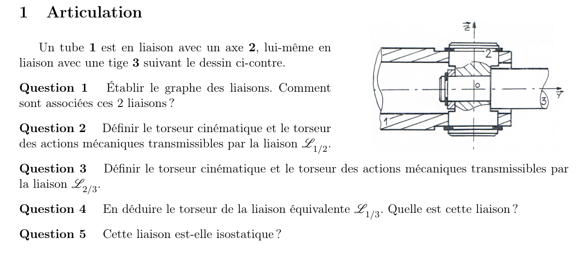
Exercice 1.1 — Articulation
Q1Graphe des liaisons
Q2Torseurs de \(L_{1/2}\)
\(\{\mathcal V_{2/1}\}_O=\{0,0,0\,;\,0,0,V_{z}\}\) (pivot : rotation autour de \(\vec z\)) et \(\{\mathcal T_{2\to1}\}_O=\{X_{21},Y_{21},Z_{21}\,;\,L_{21},M_{21},0\}\).
Q3Torseurs de \(L_{2/3}\)
\(\{\mathcal V_{3/2}\}_O=\{0,\omega_y,0\,;\,0,0,0\}\) et \(\{\mathcal T_{3\to2}\}_O=\{X_{32},Y_{32},Z_{32}\,;\,L_{32},0,N_{32}\}\).
Q4Liaison équivalente \(L_{1/3}\)
Cinématique : \(\{\mathcal V_{3/1}\}=\{\mathcal V_{3/2}\}+\{\mathcal V_{2/1}\}\) donne \(\{0,\omega_y,\omega_z\,;\,0,0,0\}\) : rotation bloquée selon \(\vec x\).
Statique : les torseurs se transmettent tels quels, donc \(M_{21}=N_{32}=0\) et \(\{\mathcal T_{3\to1}\}=\{X,Y,Z\,;\,L,0,0\}\).
Q5Isostatisme
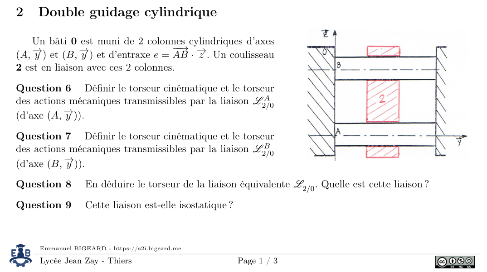
Exercice 1.2 — Double guidage cylindrique
Q6Torseurs des liaisons \(L^A_{2/0}\) et \(L^B_{2/0}\)
Chaque colonne donne une liaison pivot glissant d'axe \(\vec y\) : \(\{\mathcal V\}=\{0,\omega_{yA},0\,;\,0,V_{yA},0\}\) et \(\{\mathcal T_{2\to0}\}_A=\{X_A,0,Z_A\,;\,L_A,0,N_A\}\) ; même écriture en \(B\).
Q7Torseurs de la seconde liaison
Même écriture en \(B\) : \(\{\mathcal V\}=\{0,\omega_{yB},0\,;\,0,V_{yB},0\}\), \(\{\mathcal T_{2\to0}\}_B=\{X_B,0,Z_B\,;\,L_B,0,N_B\}\).
Q8Liaison équivalente
Cinématique : on transporte \(\{\mathcal V_{2/0}\}\) de \(B\) en \(A\) : \(\vec V_{A\in2/0}=\vec V_{B\in2/0}+\vec{AB}\wedge\vec\Omega_{2/0}=-e\,\omega_{yB}\,\vec x+\vec V_{B}\). L'égalité des deux torseurs donne \(\omega_{yB}=0\) : rotation bloquée.
Statique : on additionne \(\{\mathcal T_{A}\}+\{\mathcal T_{B}\}\), et \(\vec M_{A,2\to0}=\vec M_{B,2\to0}+\vec{AB}\wedge\vec F_{2\to0}=e\,X_B\,\vec y\).
Q9Isostatisme (double guidage)
Approche cinématique : \(m_u=1\), \(m_i=0\), \(\gamma=1\), \(E_c=6\gamma=6\), \(I_c=2\times2=4\) : \(h=m-I_c+E_c=1-4+6=3\).
Approche statique : \(E_s=6\times1=6\), \(I_s=2\times4=8\) : \(h=m-E_s+I_s=1-6+8=3\).
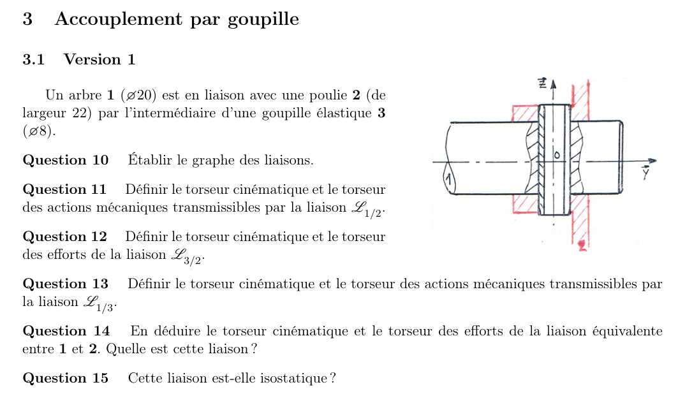
Exercice 1.3 — Accouplement par goupille, version 1
Q10Graphe des liaisons
Q11–Q13Torseurs des trois liaisons
\(\{\mathcal V_{2/1}\}=\{0,\omega_y,0\,;\,0,V_y,0\}\), \(\{\mathcal T_{2\to1}\}=\{X_{21},0,Z_{21}\,;\,L_{21},0,N_{21}\}\) ; \(\{\mathcal V_{3/2}\}=\{0,0,\omega_z\,;\,0,0,V_z\}\), \(\{\mathcal T_{3\to2}\}=\{X_{32},Y_{32},0\,;\,L_{32},M_{32},0\}\) ; \(\{\mathcal V_{3/1}\}=\{0,0,\omega_z\,;\,0,0,V_z\}\), \(\{\mathcal T_{3\to1}\}=\{X_{31},Y_{31},0\,;\,L_{31},M_{31},0\}\).
Q14Liaison équivalente entre 1 et 2
Les deux pivots glissants d'axe \(\vec z\) en série forment un pivot glissant \(L'_{1/2}\) de même axe. Ce pivot est en parallèle avec la liaison \(L_{2/1}\) d'axe \(\vec y\). Cinématique : \(\omega_y=V_y=0\) ; statique : on additionne les torseurs.
Q15Isostatisme de la version 1
Cinématique : \(m=m_u+m_i=0+2=2\), \(\gamma=1\), \(E_c=6\gamma=6\), \(I_c=6\) : \(h=m-I_c+E_c=2-6+6=2\).
Statique : \(E_s=6\times2=12\), \(I_s=3\times4=12\) : \(h=2\).
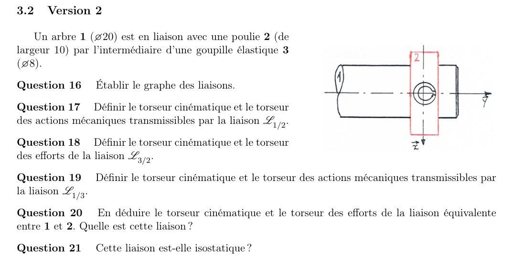
Exercice 1.3 (suite) — Accouplement par goupille, version 2
Q16Graphe
Même graphe que la version 1, sauf la liaison 1–2 : avec \(L/D=10/80<0{,}5\), le guidage est une liaison sphère–cylindre (linéaire annulaire) d'axe \((O,\vec y)\).
Q17–Q19Torseurs
\(\{\mathcal V_{2/1}\}=\{\omega_x,\omega_y,\omega_z\,;\,0,V_y,0\}\), \(\{\mathcal T_{2\to1}\}=\{X_{21},0,Z_{21}\,;\,0,0,0\}\) ; les liaisons 2–3 et 3–1 restent des pivots glissants d'axe \(\vec z\).
Q20Liaison équivalente
Cinématique : \(\omega_x=\omega_y=\omega_y\) et \(V_y=0\) : il reste \(\omega_z\) : pivot d'axe \((O,\vec z)\).
Statique : on additionne les torseurs ; \(\{\mathcal T^{eq}_{2\to1}\}=\{X_{21}+X_O,\,Y_O,\,Z_{21}\,;\,L_O,\,M_{32},\,0\}\).
Q21Isostatisme de la version 2
Cinématique : \(m=m_u+m_i=1+2=3\), \(\gamma=1\), \(E_c=6\), \(I_c=2\times2+1\times4=8\) : \(h=3-8+6=1\).
Statique : \(E_s=6\times2=12\), \(I_s=2\times4+1\times2=10\) : \(h=3-12+10=1\).
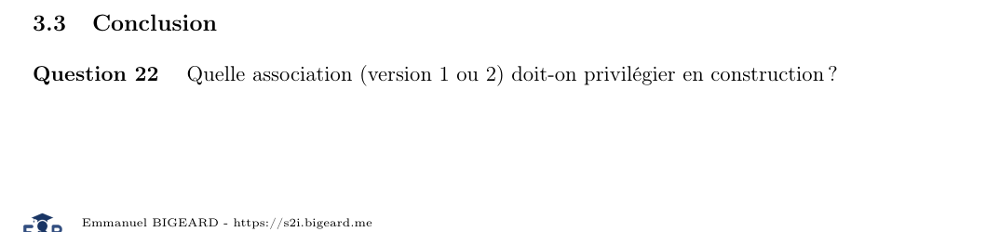
Exercice 1.3 (conclusion) — Quelle version privilégier ?
Q22Choix en construction
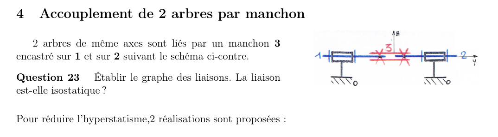
Exercice 1.4 — Accouplement de deux arbres par manchon
Q23Graphe et isostatisme
Avec \(\Sigma=\{1+2+3\}\), deux pivots d'axe \((O,\vec y)\) : \(m_u=1\), \(m_i=0\), \(\gamma=1\), \(E_c=6\), \(I_c=2\) : \(h=1-2+6=5\).
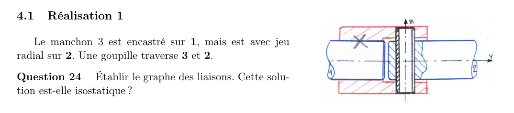
Exercice 1.4 — Réalisation 1 (manchon encastré sur 1, jeu radial sur 2, goupille)
Q24Graphe et isostatisme
Pivot d'axe \((O,\vec y)\) entre 0 et \(\Sigma_{1+3}\), pivot glissant d'axe \((O,\vec z)\) entre \(\Sigma\) et 2, pivot d'axe \((O,\vec y)\) entre 2 et 0. \(I_c=2\times1+1\times2=4\), \(E_c=6\) : \(h=1-4+6=3\).
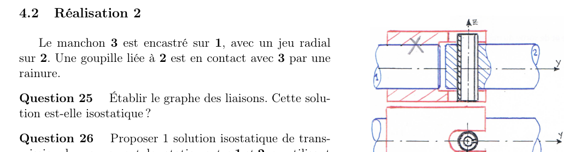
Exercice 1.4 — Réalisation 2 (goupille liée à 2, en contact par rainure)
Q25Graphe et isostatisme
Pivot d'axe \((O,\vec y)\) avec 0, sphère–cylindre (direction \(\vec z\), normale \((O,\vec x)\)) entre 2 et \(\Sigma\), pivot d'axe \((O,\vec y)\) avec 2. \(I_c=2\times1+1\times4=4\) : \(h=1-4+6=1\).
Q26Solution isostatique
Le corrigé du prof propose de combiner les deux réalisations : le manchon encastré sur 1 avec une goupille et une rainure sur 2 ramène le degré à zéro. La vérification du degré (\(h=0\)) de la combinaison est à refaire par le même comptage cinématique que ci-dessus.
2. Pompe à piston radial
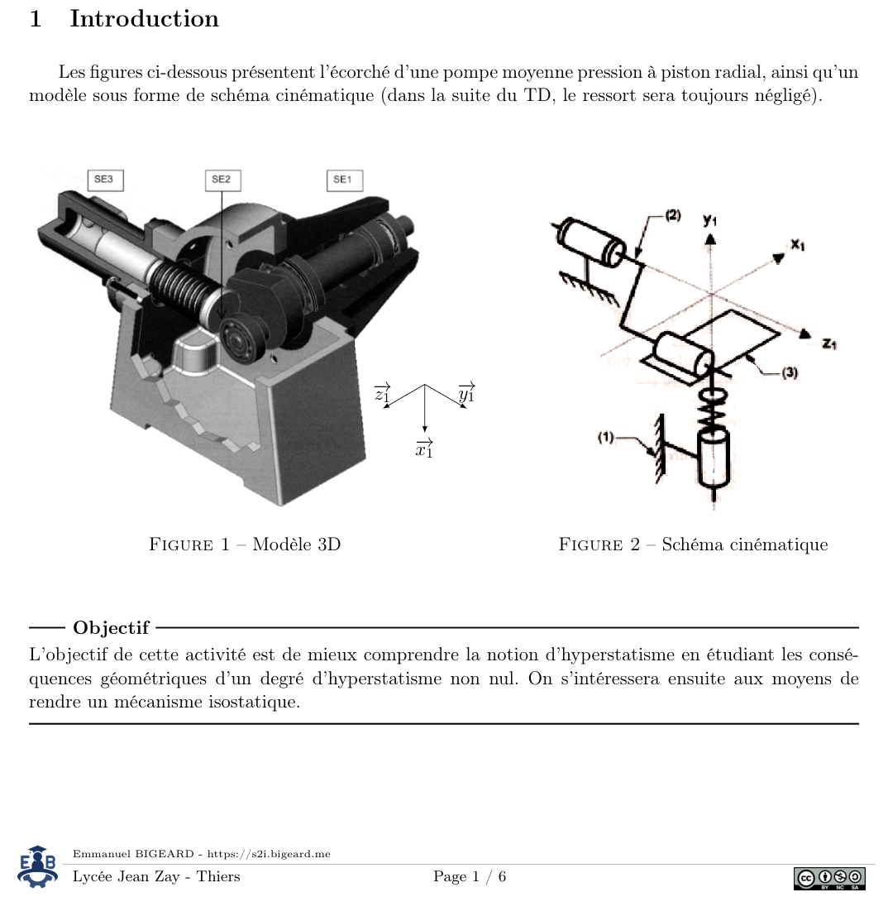
Exercice 2 — Pompe à piston radial : introduction
Objectif : comprendre l'hyperstatisme, ses conséquences géométriques, puis rendre le mécanisme isostatique. Le ressort est négligé.
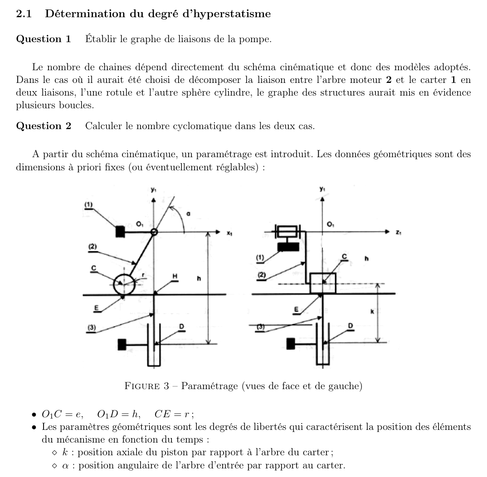
Exercice 2.1 — Détermination du degré d'hyperstatisme (Q1–Q3)
Q1Graphe de liaisons
Q2Nombre cyclomatique
3 solides, 3 liaisons : \(\gamma=N_L-N_S+1=1\) (une seule boucle).
Q3\(I_c\) et \(m\)
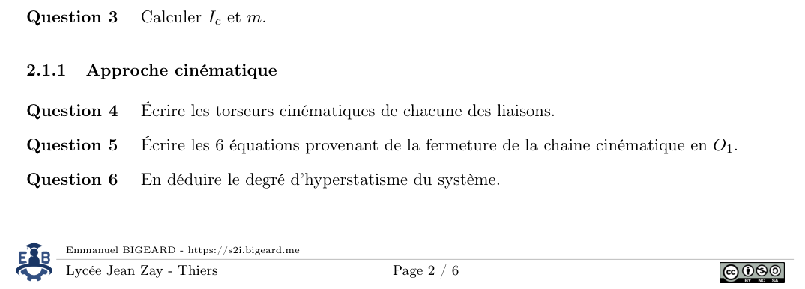
Exercice 2.1 — Approche cinématique (Q4–Q6)
Q4Torseurs cinématiques
\(\{\mathcal V_{2/1}\}_{O_1}=\{0,0,\omega_{z2/1}\,;\,0,0,0\}\) ; \(\{\mathcal V_{3/2}\}_E=\{0,\omega_{y3/2},\omega_{z3/2}\,;\,V_{x},0,V_{z}\}\) ; \(\{\mathcal V_{3/1}\}_{O_1}=\{0,\omega_{y3/1},0\,;\,0,V_{y},0\}\).
Q5Fermeture de la chaîne cinématique en \(O_1\)
\(\vec\Omega_{1/2}+\vec\Omega_{2/3}+\vec\Omega_{3/1}=\vec 0\) et \(\vec V_{O_1\in1/2}+\vec V_{O_1\in2/3}+\vec V_{O_1\in3/1}=\vec 0\) donnent six équations, dont \(\omega_{y2/3}+\omega_{y3/1}=0\), \(\omega_{z2/3}=\omega_{z2/1}\), \(V_{x,E2/3}-\omega_{z2/3}(r+e\sin\alpha)=0\), \(\omega_{z2/3}e\cos\alpha+V_{y,O_13/1}=0\), \(V_{z,E2/3}-\omega_{y2/3}e\cos\alpha=0\).
Q6Degré d'hyperstatisme (cinématique)
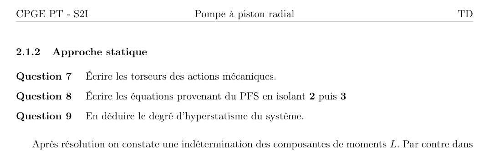
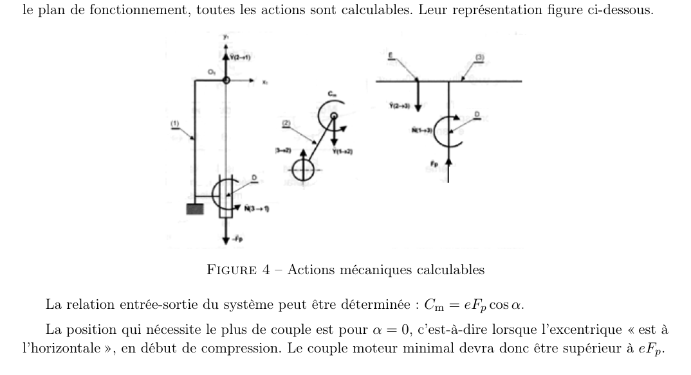
Exercice 2.1 — Approche statique (Q7–Q9)
Q7–Q8Torseurs et PFS
PFS sur l'arbre 2 : \(X_O=0\), \(Y_O+Y_E=0\), \(Z_O=0\), \(L_O+L_E=0\), \(M_O=0\), \(-eY_E\cos\alpha+C_m=0\). PFS sur le piston 3 : \(X_H=0\), \(-Y_E+F_P=0\), \(Z_H=0\), \(-L_E+L_H=0\), \(-eY_E\cos\alpha+N_H=0\).
Q9Degré d'hyperstatisme (statique)
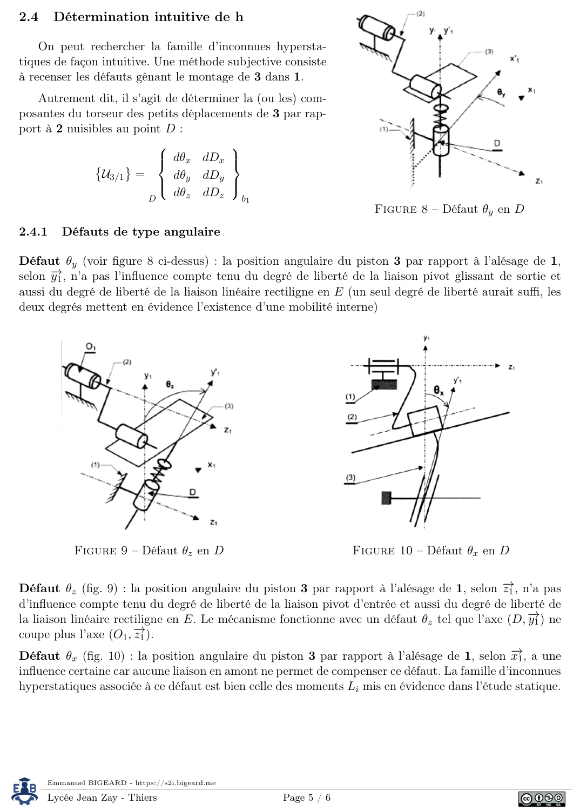
Exercice 2.2 à 2.4 — Évidence géométrique de l'hyperstatisme et défauts
Le corrigé du prof : le défaut \(\theta_x\) (rotation de 3 par rapport à l'alésage de 1, autour de \(\vec x_1\)) n'est compensé par aucune liaison en amont ; il crée des moments \(L_O\), \(L_E\), \(L_D\) dans les liaisons. Les autres défauts (\(\theta_y\), \(\theta_z\), \(dD_x\), \(dD_y\), \(dD_z\)) sont absorbés par les degrés de liberté des liaisons.
BilanConséquence
Le défaut hyperstatique apparaît dès le montage et crée des autocontraintes dans les pièces : le mécanisme fonctionne, mais avec des efforts, des pertes énergétiques et une usure supplémentaires. C'est un problème de choix de liaisons, pas d'efforts extérieurs.
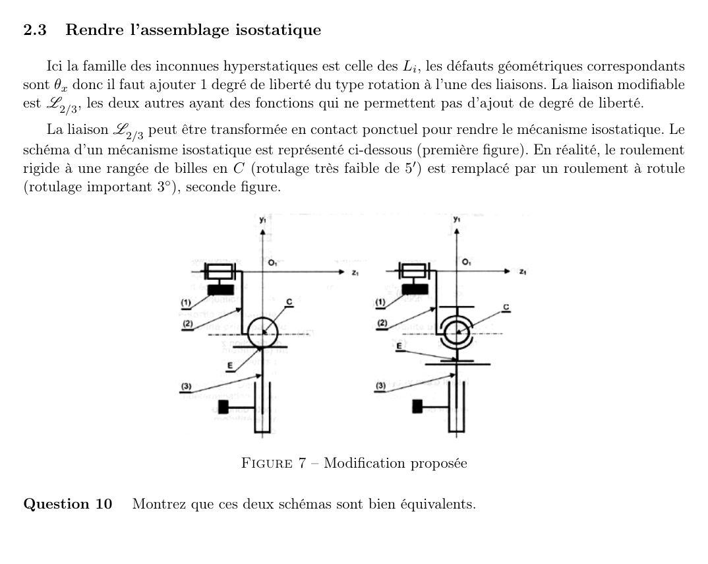
Exercice 2.3 — Rendre l'assemblage isostatique (Q10)
Q10Équivalence des deux schémas
La liaison modifiable est \(L_{2/3}\). Le roulement rigide à billes en \(C\) (rotulage faible) est remplacé par un roulement à rotule (rotulage de 3°) : les deux schémas sont équivalents si la liaison équivalente entre 2, 2' et 3 est une ponctuelle, ce qui est le cas.
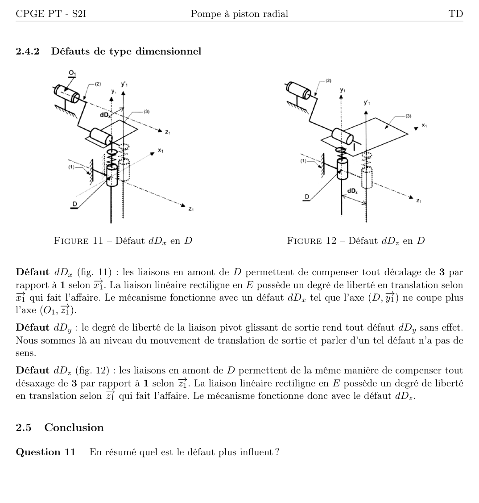
Exercice 2.4 et conclusion — Défaut le plus influent (Q11)
Q11Défaut le plus influent